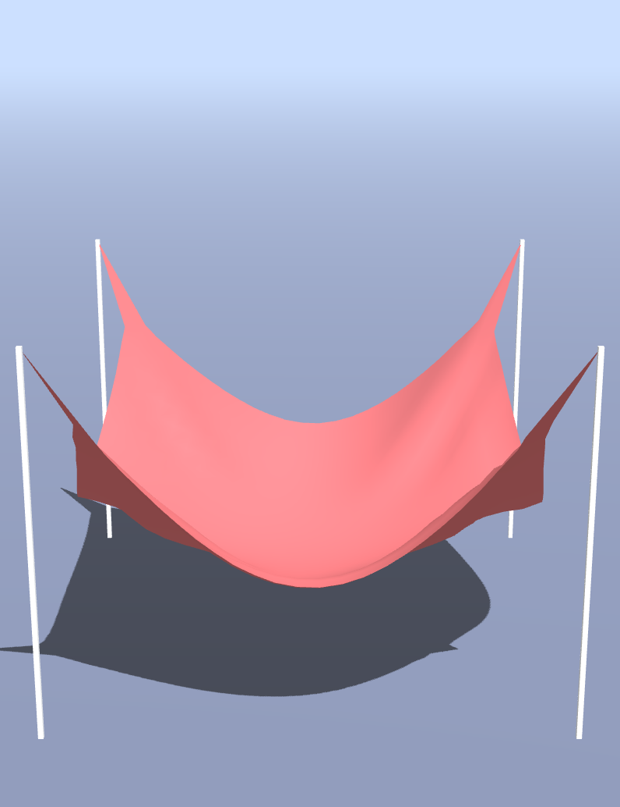
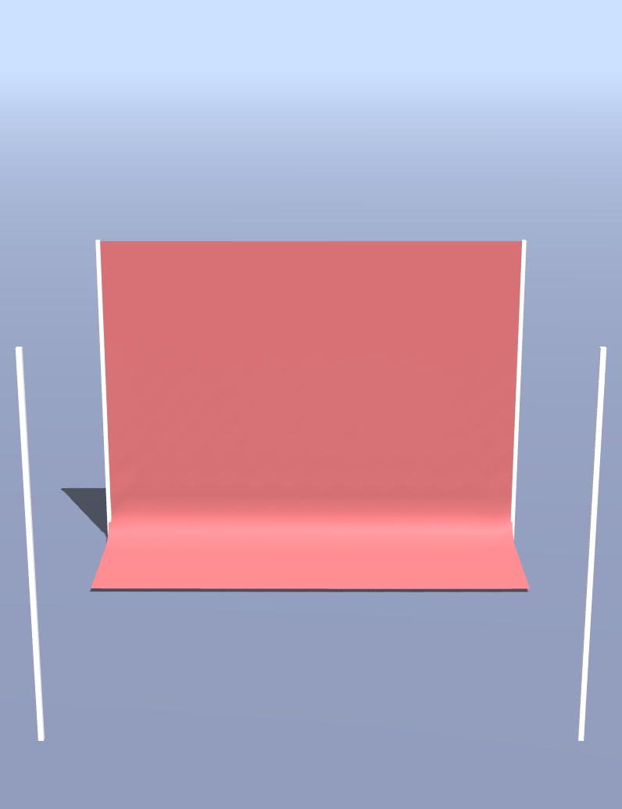
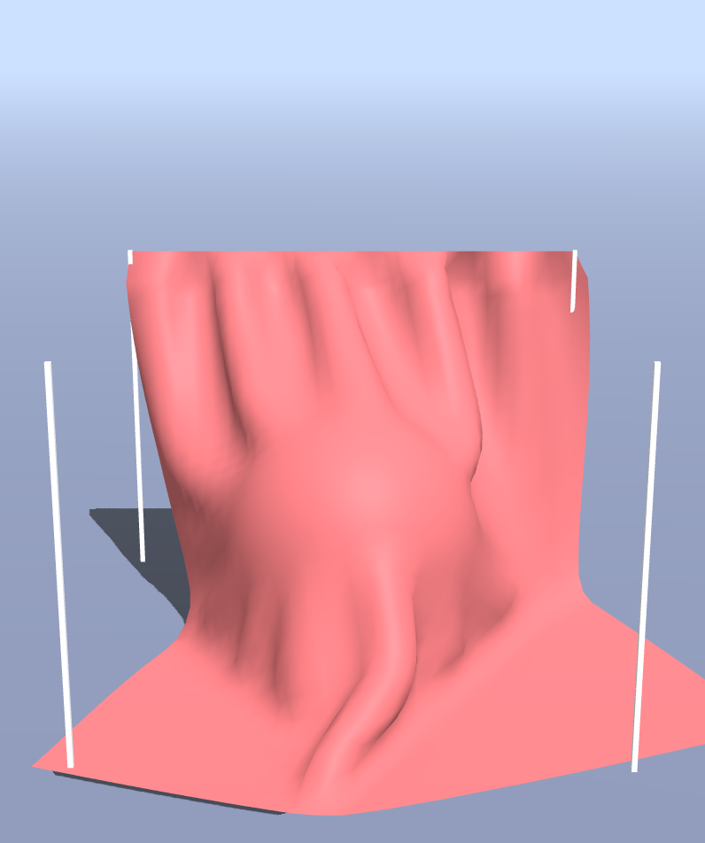
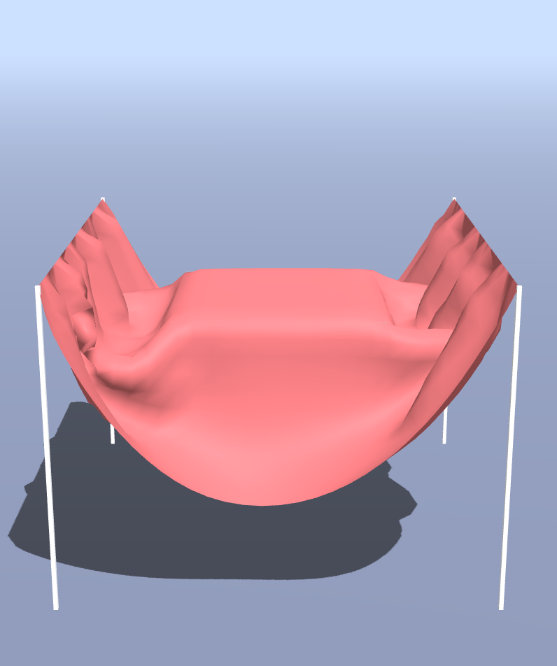

COS426 Assignment 5 Cloth Simulation — Writeup
Switch to: Simulation
that all images in this writeup were generated directly by my solution code or provided by the course staff (exception: art contest submissions may pass through intermediary software like GIMP)
that no other student has viewed my writeup explanations or my writeup images
that my solution code is my own work; particularly that my solution was not copied from any other student's solution code, and that no other student copied their solution directly code from me
that I did not discuss assignment specifics or view the solution code of any other student besides that of my (optional) partner
that I have followed all other course collaboration and course plagiarism policies as written on the course website.
Chandler Ault (cjault)
Collaborated with: Will Drury (wdrury)
Table of Contents
- (0.5) Event listeners
- (1.0) Cloth
- (1.5) Constraints
- (1.0) Gravity
- (1.5) Verlet integration
- (0.5) Floor collision
- (1.5) Sphere collision
- (1.5) Box collision
- (1.0+) Extensions
- (1.0+) Art Contest
Event Listeners
Briefly describe your implementation of adding event listeners to the scene. In particular, list all of the keys that you have bound to an action, and briefly describe the action, as below:
- "ArrowUp": Move the looked-at particle upwards.
- "ArrowDown": Move the looked-at particle downwards.
- "ArrowLeft": Move the looked-at particle to the left.
- "ArrowRight": Move the looked-at particle to the right.
- " " (spacebar): Causes a gunshot-like explosion in the fabric in the y-direction at the looked at particle.
- "b": Causes all points in the fabric to center around the mouse's position in a circular fashion. I call this the blackhole.
Cloth
To find the structural constraints, I looped from (1,1) to (h-1,w-1) in the mesh and add constraints to the right and below each vertex. After this, I looped through the edge vertices and added the structural constraints that were not provided for us (e.g. constraints from first row to second row). Next, I added the shear constraint. For this I just looped through all vertices from (0,0) to (h-1, h-1) and added the shear constraints as detailed in the instructions. Finally, I added the bending constraint by once again looping through all the vertices except for the last two (with a special case for edges) and applied the bend constraint to the vertices two steps away. It is worth noting that I would apply a mutliplier to the distance of the constraints depending on what type of spring they were. For instance, shear springs received a sqrt(2) multiplier and bend springs received a 2x multiplier.
Constraints
To enforce the structural constraints, I looped through each constraint and followed the formula detailed in the assignment specifications. I would subtract vcorr from vertex a and add vcorr to vertex b because geometrically this is what would bring the two points closer together.
Gravity
Gravity was a fairly simple implementation. I calculated the force of gravity (only in the y direction) by multiplying the particles mass with the gravity constant provided. I would then call the function particles.addForce(gravity) on this particle.
Verlet integration
I implemented Verlet integration by following the formula provided. For vt I used the difference between the previous position and current position and for acceleration I used the particles force divided by its mass.
Deliverable (click me): Please include an image of your cloth (not wireframe) with "Corners" pinned and no objects in the scene in its
final resting state, to demonstrate that your cloth updates its particle positions properly over time.

Floor collision
Briefly describe how you handled floor collisions.
Deliverable (click me): Please include an image of your cloth (not wireframe) with "OneEdge" pinned and no objects in the scene in its
final resting state, to demonstrate that your cloth does not clip through the floor.

Sphere collision
To handler sphere collision I calculated the distance between the current point and the sphere's center. If this was less than radius (or within a certain EPS), I would then project the point posNoFriction point to the surface of the sphere along the vector from the center to the point. I would then interpolate the position calculated by taking the previous position of the point and adding the velocity vector and the point posNoFriction to find the final point with friction.
Deliverable (click me): Please include an image of your cloth (not wireframe) with "OneEdge" pinned and the sphere object in the scene
in a resting state. Increase the size of the cloth to 700 so that it remains draped over the sphere.

Box collision
For box collision, I used the built-in function to test if the point was inside the box (Within some EPS). If it was, I iterated through the 6 faces and found which face of the box was the closest projection from the point. I would then put the point at that face. Since this is axis aligned, I would keep the coordinates of the point the same except for a single x, y, or z value change to project it to the nearest face. Since the velocity of the box is 0, I jsut interpolated between the new position and previous position using the fricion as the factor in interpolation.
Deliverable (click me): Please include an image of your cloth (not wireframe) with "TwoEdges" pinned and the box object in the scene
in a resting state. Increase the size of the cloth to 700 so that it remains draped over the box.

Extensions
I chose to implement changing winds, rain, add more event handlers, and prevent self-intersections.
For changing winds, I wanted to do something a little more complicated than a generic sine function. Thus, I used the formula: .5*(sin(t)^3 + sin(t)^2 - sin(t*10+2)) + windstrength
I would then follow the same process as was provided by creating a vector called windForce and applying this function as a scalar multiplier.
This created the following effect:
Simulate
Visualize
For rain, I looped for the rain rate and each time generated a random coordinate to which I applied the offset. I set the hyperparameter of the displacement of a raindrop to be -.2 in the y direction.
This was chosen by trial and error. I would then scale it by rain strength. This allowed for a wide range of rain strength providing visually sufficient results. Additionally, I applied the same force multiplied by 1/16 to the vertices
in a 3x3 box around the vertex that was originally generated. This created the following effect:
Simulate
For event handlers, I added a gunshot/explosion at the point of the mouse when space bar is pressed. To do this, I followed the protocol similar to the original arrowkey manipulations, but would just add the vector v3(10,200,10) to whatever point the mouse is one when spacebar
is pressed. This created the following effect:
Setup
For an additional event handler, I added what I call a black hole at the point of the mouse when b is pressed. To do this,
I would force every point in the mesh to be within a certain radius of where the mouse was facing when 'b' is being pressed. This created the following effect:
Setup
Finally, I added the function to prevent self-intersections. I did not want to follow the naive approach, so I did the k-window heuristic. For each point in the mesh, I would iterate though
all other particles in a 49x49 window around the specific point. If these two points were within an EPS (20 worked well by trial and error), then I would use a function
similar to the constraints but pushing in opposite directions so that the particles move away from each other.
Simulate
Visualize
Art contest
Briefly describe your submission to the art contest. Please include images and/or videos as necessary so that we can see what you've done!